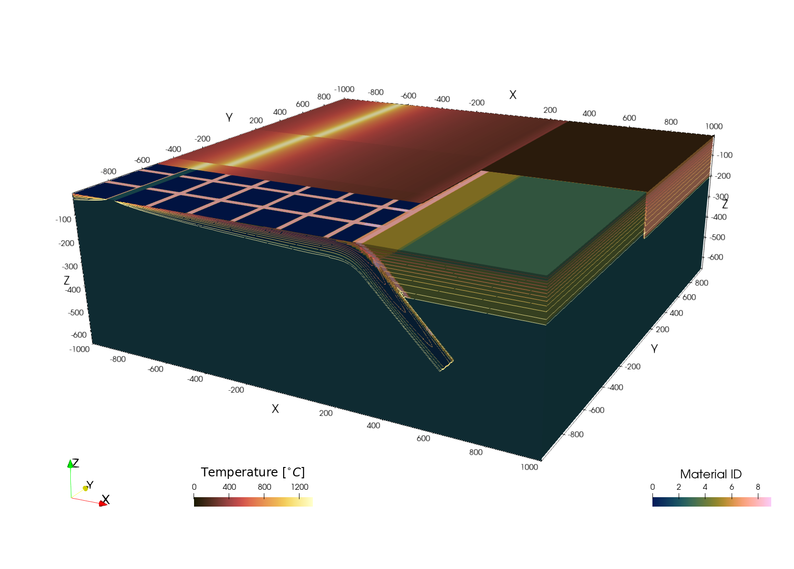

Creating 3D numerical model setups
Aim
The aim of this tutorial is to show you how to create 3D numerical model setups that can be used as initial setups for other codes.
3D Subduction setup
Lets start with creating a 3D model setup in Cartesian coordinates, which uses the CartData data structure
using GeophysicalModelGenerator
nx,ny,nz = 512,512,128
x = range(-1000,1000, nx);
y = range(-1000,1000, ny);
z = range(-660,0, nz);
Grid = CartData(xyz_grid(x,y,z));Now we create an integer array that will hold the Phases information (which usually refers to the material or rock type in the simulation)
Phases = fill(2,nx,ny,nz);In many (geodynamic) models, one also has to define the temperature, so lets define it as well
Temp = fill(1350.0, nx,ny,nz);Simple free subduction setup
Much of the options are explained in the 2D tutorial, which can directly be transferred to 3D. Therefore, we will start with a simple subduction setup, which consists of a horizontal part that has a mid-oceanic ridge on one explained
We use a lithospheric structure, which can be specified with the LithosphericPhases structure, where you can indicate Layers (the thickness of each lithospheric layer, starting from the top), and Phases the phases of the corresponding layers. Note that if the lowermost layer has the same phase as the mantle, you can define Tlab as the lithosphere-asthenosphere boundary which will automatically adjust the phase depending on temperature
lith = LithosphericPhases(Layers=[15 45 10], Phases=[0 1 2], Tlab=1250)
add_box!(Phases, Temp, Grid; xlim=(-800.0,0.0), ylim=(-400, 400.0), zlim=(-80.0, 0.0), phase = lith,
Origin=(-0,0,0),
T=SpreadingRateTemp(SpreadingVel=3, MORside="right"), StrikeAngle=30);And an an inclined part:
add_box!(Phases, Temp, Grid; xlim=(0.0,300.0), ylim=(-400.0, 400.0), zlim=(-80.0, 0.0), phase = lith,
Origin=(-0,0,0),
T=McKenzie_subducting_slab(Tsurface=0,v_cm_yr=3), DipAngle=30, StrikeAngle=30);Add them to the CartData dataset:
Grid = addfield(Grid,(;Phases, Temp))CartData
size : (512, 512, 128)
x ϵ [ -1000.0 : 1000.0]
y ϵ [ -1000.0 : 1000.0]
z ϵ [ -660.0 : 0.0]
fields : (:Z, :Phases, :Temp)
Which looks like
write_paraview(Grid,"Grid3D_FreeSubduction");Saved file: Grid3D_FreeSubduction.vts
More sophisticated setup
Next, lets consider a somewhat more complicated setup with curved slabs, an overriding plate and a thermal structure that transitions from half-space cooling to a slab that is heated from both sides
nx,ny,nz = 512,512,128
x = range(-1000,1000, nx);
y = range(-1000,1000, ny);
z = range(-660,0, nz);
Grid = CartData(xyz_grid(x,y,z));
Phases = fill(2,nx,ny,nz);
Temp = fill(1350.0, nx,ny,nz);Overriding plate with a 30 km crust and mantle lithosphere that where T<1250 celsius
lith_cont = LithosphericPhases(Layers=[30 200 50], Phases=[3 4 2], Tlab=1250)
add_box!(Phases, Temp, Grid; xlim=(400.0,1000.0), ylim=(-1000.0, 0.0), zlim=(-240.0, 0.0), phase = lith_cont, T=HalfspaceCoolingTemp(Age=150));
add_box!(Phases, Temp, Grid; xlim=(200.0,1000.0), ylim=(-1000.0, 0.0), zlim=(-80.0, 0.0), phase = lith_cont, T=HalfspaceCoolingTemp(Age=150));
lith_cont = LithosphericPhases(Layers=[30 200 10], Phases=[5 6 2], Tlab=1250)
add_box!(Phases, Temp, Grid; xlim=(400.0,1000.0), ylim=(0.0, 1000.0), zlim=(-240.0, 0.0), phase = lith_cont, T=HalfspaceCoolingTemp(Age=200));
add_box!(Phases, Temp, Grid; xlim=(200.0,1000.0), ylim=(0.0, 1000.0), zlim=( -80.0, 0.0), phase = lith_cont, T=HalfspaceCoolingTemp(Age=200));Define an oceanic plate with ridge
v_spread_cm_yr = 3 #spreading velocity
lith = LithosphericPhases(Layers=[15 45 10], Phases=[0 1 2], Tlab=1250)
add_box!(Phases, Temp, Grid; xlim=(-800.0 , 200.0), ylim=(-1000.0, -400.0), zlim=(-80.0, 0.0), phase = lith, T=SpreadingRateTemp(SpreadingVel=3));
add_box!(Phases, Temp, Grid; xlim=(-1000.0,-800.0), ylim=(-1000.0, -400.0), zlim=(-80.0, 0.0), phase = lith, T=SpreadingRateTemp(SpreadingVel=3,MORside="right"));
add_box!(Phases, Temp, Grid; xlim=(-700.0, 200.0), ylim=(-400.0, 200.0), zlim=(-80.0, 0.0), phase = lith, T=SpreadingRateTemp(SpreadingVel=3));
add_box!(Phases, Temp, Grid; xlim=(-1000.0,-700.0), ylim=(-400.0, 200.0), zlim=(-80.0, 0.0), phase = lith, T=SpreadingRateTemp(SpreadingVel=3,MORside="right"));
add_box!(Phases, Temp, Grid; xlim=(-650.0, 200.0), ylim=(200.0, 1000.0), zlim=(-80.0, 0.0), phase = lith, T=SpreadingRateTemp(SpreadingVel=3));
add_box!(Phases, Temp, Grid; xlim=(-1000.0,-650.0), ylim=(200.0, 1000.0), zlim=(-80.0, 0.0), phase = lith, T=SpreadingRateTemp(SpreadingVel=3,MORside="right"));Subducting parts of the oceanic plate
The starting thermal age at the trench is that of the horizontal part of the oceanic plate (which is different along-trench, given that we have 3 mid oceanic ridge segments!): We want to add a smooth transition from a halfspace cooling 1D thermal profile to a slab that is heated by the surrounding mantle below a decoupling depth d_decoupling.
AgeTrench_Myrs = 1000*1e3/(v_spread_cm_yr/1e2)/1e6 #plate age @ trench
trench1 = Trench(Start=(200.0,-1000.0), End=(200.0,-400.0), Thickness=90.0, θ_max=45.0, Length=600, Lb=200, WeakzoneThickness=15, WeakzonePhase=7, d_decoupling=175);
T_slab = LinearWeightedTemperature( F1=HalfspaceCoolingTemp(Age=AgeTrench_Myrs), F2=McKenzie_subducting_slab(Tsurface=0,v_cm_yr=v_spread_cm_yr, Adiabat = 0.0))
add_slab!(Phases, Temp, Grid, trench1, phase = lith, T=T_slab);AgeTrench_Myrs = (900)*1e3/(v_spread_cm_yr/1e2)/1e6 #plate age @ trench
trench1 = Trench(Start=(200.0,-400.0), End=(200.0,200.0), Thickness=90.0, θ_max=45.0, Length=600, Lb=200, WeakzoneThickness=15, WeakzonePhase=7, d_decoupling=175);
T_slab = LinearWeightedTemperature( F1=HalfspaceCoolingTemp(Age=AgeTrench_Myrs), F2=McKenzie_subducting_slab(Tsurface=0,v_cm_yr=v_spread_cm_yr, Adiabat = 0.0))
add_slab!(Phases, Temp, Grid, trench1, phase = lith, T=T_slab);AgeTrench_Myrs = 850e3/(v_spread_cm_yr/1e2)/1e6 #plate age @ trench
trench1 = Trench(Start=(200.0,200.0), End=(200.0,1000.0), Thickness=90.0, θ_max=45.0, Length=600, Lb=200, WeakzoneThickness=15, WeakzonePhase=7, d_decoupling=175);
T_slab = LinearWeightedTemperature( F1=HalfspaceCoolingTemp(Age=AgeTrench_Myrs), F2=McKenzie_subducting_slab(Tsurface=0,v_cm_yr=v_spread_cm_yr, Adiabat = 0.0))
add_slab!(Phases, Temp, Grid, trench1, phase = lith, T=T_slab);Finally, it is often nice to see the deformation of the plate when it subducts. A simple way to do that is to put a stripes on top using add_stripes!, which has the same phase as the subducting crust.
add_stripes!(Phases, Grid; stripAxes = (1,1,0), phase = ConstantPhase(0), stripePhase = ConstantPhase(9), stripeWidth=50, stripeSpacing=200)Finally, we can add all this to the CartData dataset:
Grid = addfield(Grid,(;Phases, Temp))
write_paraview(Grid,"Grid3D_Ridges");Saved file: Grid3D_Ridges.vts
And the resulting image looks like 
This page was generated using Literate.jl.